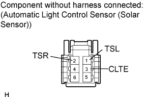

SOLAR SENSOR > INSPECTION |
| 1. INSPECT AUTOMATIC LIGHT CONTROL SENSOR (SOLAR SENSOR) |
 |
Connect the battery positive (+) lead to terminal 6 and the negative (-) lead to terminal 3, then measure the according to the value(s) in the table below.
| Tester Connection | Condition | Specified Condition |
| 1 (TSL) - 3 (CLTE) | Sensor subject to electric light | 0.5 V to 3.0 V |
| 1 (TSL) - 3 (CLTE) | Sensor covered with a cloth | 0.5 V or less |
| 2 (TSR) - 3 (CLTE) | Sensor subject to electric light | 0.5 V to 3.0 V |
| 2 (TSR) - 3 (CLTE) | Sensor covered with a cloth | 0.8 V or less |